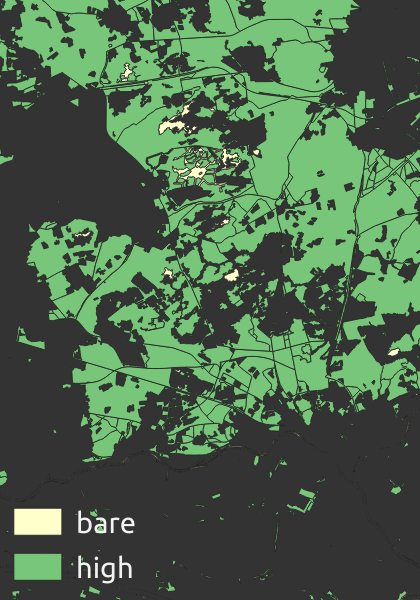
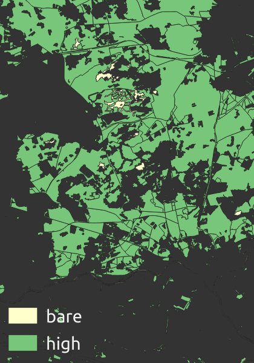

Building a national vector tile set
by: Steven Ottens - @stvno
webmapper.github.io/foss4g2019
Webmapper
Utrecht, the Netherlands
Data - Design - Technology
1:50 000
1:25 000
Lots of Data
Beautiful maps
cartiqo
Consistent
Consistent
 

across zoom levels
across source data
Create a datamodel

github.com/webmapper/cartiqo-documentation
Create a datamodel
Open Zoomstack - Ordnance Survey
Map your source data
----------NATURAL--------------------
--high
INSERT INTO cartiqo.natural_5_6_uo (type, geom, originalId)
select 'high', st_multi(geometrie_vlak_3857), gml_id
from top1000.terrein where typelandgebruik = 'bos';
--bare
INSERT INTO cartiqo.natural_5_6_uo (type, geom, originalId)
select 'bare', st_multi(geometrie_vlak_3857), gml_id
from top1000.terrein where typelandgebruik = 'zand';
Accurate
 *
*
authorative
up to date
Paper trail
Include original IDs
Document your sources
Automate

if [ $theirdate -gt $ourdate ]; then
# there is a newer file on the server, lets run the scripts
./run.sh $url $theirs
else
echo "No newer version of "$file"; currently at "$theirs
fi
Simple

to use
to create
to maintain
Data wrangling
11 different sources
different datamodels
different update frequencies
Tile management
⁂ Tegola is your friend ⁂
Fast

to create
to deliver
to render
Order your data
CREATE TABLE cartiqo.natural_5_6 AS
SELECT * FROM cartiqo.natural_5_6_uo
ORDER BY ST_GeoHash(ST_Transform(ST_Envelope(geom),4326),10)
COLLATE "C";
CREATE INDEX cartiqo_natural_5_6_geohash
ON cartiqo.natural_5_6
(ST_GeoHash(ST_Transform(ST_Envelope(geom),4326),10));
CLUSTER cartiqo.natural_5_6 USING cartiqo_natural_5_6_geohash;
CREATE INDEX cartiqo_natural_5_6_geom
ON cartiqo.natural_5_6 USING gist (geom);
Enable web speed
gzip encoding
cache-headers
multiple subdomains
⁂ CDN is your friend ⁂

Pop quiz:
Hardening formed by related elements of limited dimensions, such as, for example, clinkers and tiles.
Pop quiz:
Feature type: "barren terrain"
Physical appearance: "open pavement"